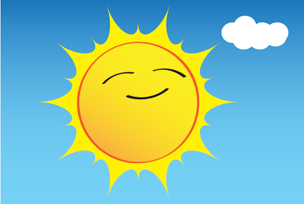
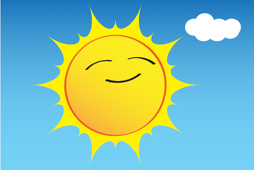

Los planetas son astros que giran alrededor de una estrella, el Sol. No tienen luz propia, sino que reflejan la luz solar.
Mercurio, Venus, La Tierra y Marte; Júpiter, saturno
Los planetas son objetos celestes sin luz propia que giran alrededor de una estrella. Tienen tres movimientos principales:Rotación, translación y precesión. La rotación es el giro sobre sí mismos alrededor de un eje imaginario, normalmente perpendicular al plano de la órbita con el Sol o "eclíptica".
 src="https://definicion.de/wp-content/uploads/2009/01/planeta-tierra.png"
"imagen del planeta planeta-tierra

src="https://definicion.de/wp-content/uploads/2009/01/planeta-tierra.png"
"imagen del planeta planeta-tierra
